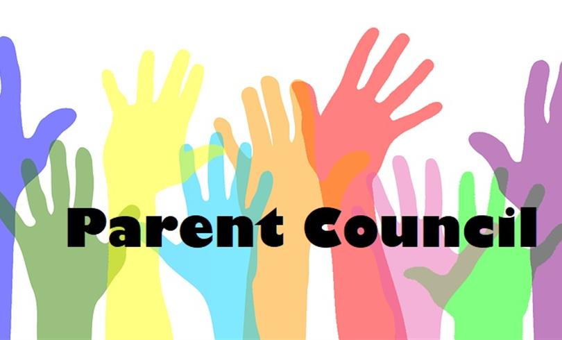

$500 Annual Fund Memo
Annual Report
Effective Meetings
Financial Resources
Insurance
Parents Reaching Out (PRO) Grants
Resources and Supports
School Council Input – Principal Leadership
School Ground Greening
Volunteer Management
PIC Meeting Minutes March 2023
PIC Meeting Agenda June 5, 2023
PIC Meeting Minutes – Feb 27, 2023
The UGDSB’s Parent Involvement Committee is a link between our parent communities and our school board. The PIC’s mandate is to increase and encourage parent engagement in our local schools which in turn improves student achievement.
Welcome to Parent Council of ANB High School!
School councils are an excellent way for parents to get involved in their child`s education. Our school has an elected school council that is an important forum for involving all members of the school community in issues that affect the education of students. The school council is made up of an elected committee of parents, staff and student representatives, appointed community members, the principal, and a general membership which includes all parent of children attending the school. The school council advises the principal on a variety of issues and activities relating to student achievement, curriculum goals and priorities, school budget priorities, school safety, renovation plans, after school activities, and criteria for selection of new principals.
Parents play an important role in student success. School councils allow parents to participate in decisions that impact student learning.
Parents actively contribute to the success of the school community by contributing knowledge, perspective and ideas at school council meetings and through other methods established by the school council, including, but not limited to, participating in:
| survey | focus groups | committees |
| projects teams | volunteer activities | ... |
Parents of students enrolled in the school must make up the majority of the school council. School councils may also decide to include one or more parents of children enrolled in an Early Childhood Services (ECS) program at the school or other individuals who have an interest in the school.
Phone number: +1 *** *** ***
Mail: anbhighschool@gmail.com